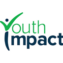

Abwaab
Mastery & adaptive practice · Amman, Jordan · since 2019
- Funding
- $20M Series A led by BECO Capital, Nov 2021
- Acquisitions
- Bought Egypt's Apex Education (earlier in 2026) and Eduact (Sep 2026)
- Price
- About $50 per full academic year self-reported
abwaab.com · sources: abwaab.com · wamda.com · wamda.com · jordannews.jo · coresignal.com
Show on map →
Acely
Mastery & adaptive practice · San Francisco, CA · since 2017
- Price
- $49/month annual; $99/month quarterly; $149 monthly
- Revenue
- $10M ARR self-reported
- YC batch
- Winter 2018
acely.com · on X: @vivianmshen (Vivian Midha Shen) · sources: ycombinator.com · acely.com
Show on map →

Alef Education
Mastery & adaptive practice · Abu Dhabi, UAE · since 2016
- Students
- Nearly 2 million registered across 19,000 schools self-reported
- Revenue
- AED361.6m in H1 2026
- Ranking
- 13th globally, 1st in MEA, TIME World's Top EdTech Companies 2026
alefeducation.com · sources: alefeducation.com · linkedin.com
Show on map →
ALEKS (McGraw Hill)
Mastery & adaptive practice · Irvine, CA · since 1996 · acquired
- Students served
- Used by over 25-30 million students since 1996 self-reported
- Acquired
- By McGraw-Hill Education, 2013
- New course
- ALEKS for Calculus released 2025
aleks.com · sources: innovation.uci.edu · socsci.uci.edu · arxiv.org · s205.q4cdn.com · mheducation.com
Show on map →
Apprendemos
Mastery & adaptive practice · Lima, Peru · since 2020
- Users
- 140,000+ students and 10,000 teachers in 2024 self-reported
- Price
- Free
- Award
- HundrED Global Collection 2026
apprendemos.com · sources: apprendemos.com · hundred.org · grade.org.pe
Show on map →
atama+
Mastery & adaptive practice · Tokyo, Japan · since 2017
- Classrooms
- 3,100+ cram-school classrooms (Apr 2022) self-reported
- Funding
- ¥5.1B Series B (Jul 2021); ¥8.2B raised in total
atama.plus · sources: atama.plus · corp.atama.plus · resemom.jp · thebridge.jp
Show on map →
Benesse (Shinkenzemi, Kodomo Challenge)
Mastery & adaptive practice · Okayama, Japan · since 1955 · incumbent
- Take-private
- EQT and the founding family took it private in a ~$1.78B (¥270B) deal; 70.1% stake bought Mar 3, 2024
- Revenue
- ¥430.1B revenue (2017)
- Kodomo Challenge
- Preschool program with Shimajiro mascot running since Apr 1988
benesse-hd.co.jp · sources: en.wikipedia.org
Show on map →
Bloomy
Mastery & adaptive practice · San Francisco, CA · since 2026
- Mastery gate
- Students advance only after 90% proficiency on a skill self-reported
- Backing
- Y Combinator Summer 2026; team of 1
bloomylearning.com · on X: @alexsouthmayd (Alex Southmayd) · sources: bloomylearning.com · ycombinator.com
Show on map →
Brilliant
Mastery & adaptive practice · San Francisco, CA · since 2012
- Learners
- 10M+ self-reported
- Courses
- 90+ guided courses in math, computer science and science
brilliant.org · sources: brilliant.org · en.wikipedia.org · builtin.com · yespress.io
Show on map →
Cerebry
Mastery & adaptive practice · Singapore · since 2016
- Schools
- 16k+ schools; 15+ countries self-reported
- Funding
- $1M seed led by Ascend Vietnam Ventures
cerebry.co · sources: cerebry.co · technode.global
Show on map →
Chiron
Mastery & adaptive practice · London, UK · since 2023
- Backing
- Y Combinator Spring 2025; team of 2
- Platform
- iPad app on the App Store; schools and tutors on request
projectchiron.org · on X: @J4mesBooth (James Booth) · @MaxB00th (Max Booth) · sources: projectchiron.org · ycombinator.com
Show on map →
CoLearn
Mastery & adaptive practice · Jakarta, Indonesia · since 2020
- Price
- Rp90.000/month for one math class a week
- Funding
- $10M Series A co-led by Alpha Wave Incubation and GSV Ventures, Apr 2021
- Users
- 3.5M downloads, about 1M active users self-reported
colearn.id · sources: colearn.id · techcrunch.com · linkedin.com
Show on map →
DreamBox Math (Discovery Education)
Mastery & adaptive practice · Bellevue, WA · since 2006 · acquired
- Reach
- 6M+ students, 600,000 educators at acquisition self-reported
- Acquired
- By Clearlake-backed Discovery Education, 2023; terms undisclosed
dreambox.com · sources: k12dive.com · geekwire.com · cepr.harvard.edu · edsurge.com
Show on map →
Edmentum (Exact Path, Apex Learning, Study Island)
Mastery & adaptive practice · Bloomington, MN · since 2000 · incumbent
- Reach
- ~5M students in 6,200+ US public school districts self-reported
- Acquisition
- Bought Apex Learning (closed Jul 28, 2021)
- GSV 150
- Named to the 2025 and 2026 GSV 150
edmentum.com · sources: en.wikipedia.org · edmentum.com · newswire.com · edmentum.com · asugsvsummit.com
Show on map →
Eedi
Mastery & adaptive practice · London, UK
- RCT result
- About 2 extra months' maths progress; ~4 months at 10-15 min/week (2,901 Year 7 students, 20 schools)
- AI tutoring pilot
- Human-supervised Google LearnLM tutor: 66% vs 60% for human tutors on short-term transfer questions (5 classrooms, 165 students) self-reported
eedi.com · sources: eedi.com · eedi.com · businesswire.com · lboro.ac.uk · podcast.mrbartonmaths.com
Show on map →
EIDU
Mastery & adaptive practice · Berlin, Germany · since 2015
- Learners
- 790,000 learners with 39 governments in 2025; 1M+ since 2020 self-reported
- RCT
- External year-long RCT: effect of 0.53 SD on literacy and numeracy
- Origin
- Founded in Nairobi, Kenya in 2015; first county government partner 2017
eidu.com · sources: eidu.com · eidu.com · eidu.com · eidu.com · eidu.com · linkedin.com
Show on map →
Evolytes
Mastery & adaptive practice · Reykjavík, Iceland
- Funding
- $520,000 round led by NSA Ventures (Dec 2021)
- Funding
- $1.4M seed (Apr 2025)
- Recognition
- 2026 GSV Cup 50
evolytes.com · sources: vcbacked.co · northstack.is · asugsvsummit.com
Show on map →
evulpo
Mastery & adaptive practice · Zurich, Switzerland
- Funding
- CHF 8.8M Series A
- Schools
- ~100 schools using it self-reported
evulpo.com · sources: evulpo.com · walderwyss.com · evulpo.com · evulpo.com
Show on map →
Geekie
Mastery & adaptive practice · São Paulo, Brazil · since 2011 · acquired
- Students reached
- 12M+ students (cumulative) self-reported
- Partner schools
- 630 partner schools; 130,000 active students self-reported
- Award
- Prêmio Top Educação, 'IA para escolas' (2025)
geekie.com.br · sources: cbinsights.com · geekie.com.br · startupi.com.br · lemanncenter.stanford.edu · americasquarterly.org
Show on map →

Graspable Math
Mastery & adaptive practice · Bloomington, IN · since 2016
- Grant
- $900K IES SBIR Phase II (2019-2021)
- Founders
- David Landy, Erik Weitnauer, Erin Ottmar
activities.graspablemath.com · sources: cbinsights.com · ies.ed.gov · graspablemath.com
Show on map →
Imagine Learning (Edgenuity, Imagine Math)
Mastery & adaptive practice · Tempe, AZ · incumbent
- Reach
- 18M+ students in over half of US districts self-reported
- Merger
- Edgenuity and Imagine Learning merged into Weld North Education, renamed Imagine Learning (effective Jan 1, 2022)
imaginelearning.com · sources: businesswire.com · imaginelearning.com · schoolboard.kgbsd.org
Show on map →
Innovamat
Mastery & adaptive practice · Sant Cugat del Vallès, Spain · since 2017
- Reach
- 22,000 teachers, 2,600+ schools, 560,000+ students in 9 countries self-reported
- Funding
- $21M Series A led by Reach Capital (Apr 2023)
innovamat.com · sources: careers.innovamat.com · techcrunch.com
Show on map →
IXL Learning
Mastery & adaptive practice · San Mateo, CA · since 1998
- Students
- 18M+ self-reported
- Acquisitions
- Bought Evan-Moor (PreK-8 workbooks), announced 2 Oct 2025
- RCT
- Johns Hopkins CRRE trial, one Michigan district, grades 3-5: +10 points on Star Math
ixl.com · sources: ixl.com · similarweb.com · ixl.com · eschoolnews.com · sri.com · ixl.com
Show on map →

Khan Academy
Mastery & adaptive practice · Mountain View, CA · since 2008 · incumbent
- Registered users
- 189.6M registered users, 104.9M yearly active learners (SY24-25) self-reported
- Revenue
- $117.5M total revenue (fiscal year to June 2025) on IRS Form 990; mostly donor-funded
khanacademy.org · sources: donate.khanacademy.org · annualreport.khanacademy.org · en.wikipedia.org · projects.propublica.org
Show on map →
Kinnu
Mastery & adaptive practice · London, UK · since 2021
- Users
- 1.2 million self-reported
- Funding
- $9M total; $6.5M seed (LocalGlobe, Cavalry) in 2023
- Founders
- Christopher Kahler and Abraham Müller, joined by Hanna Celina
kinnu.xyz · sources: kinnu.xyz · uktech.news
Show on map →
Kolibri (Learning Equality)
Mastery & adaptive practice · La Jolla, CA · since 2013
- Reach
- Installed in 220+ countries and territories self-reported
- Price
- Free, open source
- Founded
- Nonprofit incorporated April 2013
learningequality.org · sources: learningequality.org · learningequality.org · learningequality.org · learningequality.org
Show on map →
Luca
Mastery & adaptive practice · Mexico City, Mexico · since 2020
- Funding
- $8M Series A led by 6 Degrees Capital; $13M+ total
- Students
- 30,000+ active students in Mexico self-reported
- Claimed result
- 20% gain in academic performance per Tec de Monterrey study self-reported
lucaedu.com · sources: lucaedu.com · mx.linkedin.com · mexicobusiness.news
Show on map →
Magma Math
Mastery & adaptive practice · Stockholm, Sweden · since 2015
- Funding
- $40M Series A from Five Elms Capital
- Reach (Sweden)
- About one in two Swedish compulsory-school students use it self-reported
- Grant
- SEK 7.6M from the Gates Foundation
- US
- District partnerships in 30+ states self-reported
magmamath.com · sources: magmamath.com · osborneclarke.com · efn.se
Show on map →
Math Academy
Mastery & adaptive practice · Pasadena, CA · since 2013
- Price
- $49/month per student
- Origin
- Began as a Pasadena USD gifted-math program (pilot 2016-17); online platform opened to outside students in 2021
- Pass rate
- Students pass lessons 93% of the time on first try, 98% on second self-reported
- Courses
- 4th grade math through AP Calculus BC, Linear Algebra, Multivariable Calculus, Math for Machine Learning
mathacademy.com · sources: mathacademy.com · mathacademy.com · mathacademy.com · mathacademy.com · justinmath.com · justinmath.com
Show on map →

MATHia (Carnegie Learning)
Mastery & adaptive practice · Pittsburgh, PA · since 1998
- RAND RCT
- 17,000+ students, 147 schools in seven states; ~8 percentile points in year two, none in year one
- Evidence for ESSA
- Weighted effect +0.04 across three high school studies; rated 'strong'
- Owner
- CIP Capital (since 2018)
carnegielearning.com · sources: en.wikipedia.org · edweek.org · edweek.org · evidenceforessa.org · carnegielearning.com
Show on map →

McGraw Hill
Mastery & adaptive practice · Columbus, OH · since 1888 · incumbent
- Revenue (FY ended Mar 2026)
- $2,102.8 million
- Licenses
- Over 100 million active student and educator curriculum licenses self-reported
- Reach
- Content in more than 100 countries and more than 80 languages self-reported
mheducation.com · sources: sec.gov · en.wikipedia.org
Show on map →
Modern Classrooms Project
Mastery & adaptive practice · Washington, DC · since 2018
- Teachers trained
- 65,000 in free online courses self-reported
- Schools
- 6,100 using the methods, in 1,900+ districts self-reported
- Revenue (FY ended Sep 2025)
- $13,826,909
- Evaluation
- Five-year federal EIR-funded evaluation of math outcomes by American Institutes for Research, underway self-reported
modernclassrooms.org · sources: projects.propublica.org · modernclassrooms.org · blendedlearning.org · modernclassrooms.org · jscholarship.library.jhu.edu
Show on map →
NoRILLA
Mastery & adaptive practice · Pittsburgh, PA · since 2014
- Award
- Tools Competition winner (AI-enhanced hands-on science)
- Reach
- Used in formal and informal settings reaching millions of children and families self-reported
norilla.com · sources: bouncewatch.com · tools-competition.org · cmu.edu · norilla.com
Show on map →
OATutor
Mastery & adaptive practice · Berkeley, CA
- Award
- Growth Award, Tools Competition (Aug 2024)
- Award
- Selected for California Learning Lab AI FAST Challenge (May 2025)
- License
- Open source; CC-licensed problem library
oatutor.io · sources: oatutor.io
Show on map →

Pandai
Mastery & adaptive practice · Kuala Lumpur, Malaysia · since 2020
- Students
- 1,007,763+ self-reported
- Accelerator
- Y Combinator Summer 2021; team of 32
pandai.org · on X: @akmalakhpah (Akmal Akhpah) · sources: pandai.org · my.pandai.org · ycombinator.com
Show on map →
Podsie
Mastery & adaptive practice · Oakland, CA · since 2020
- Price
- Free
- Funding
- Grants incl. National Science Foundation and Tools Competition
- Content
- 72,000 teacher-created questions (2023) self-reported
podsie.org · sources: podsie.org · linkedin.com · learningscientists.org
Show on map →
Qubena (COMPASS)
Mastery & adaptive practice · Tokyo, Japan · since 2012
- Schools
- 3,300+ elementary and junior high schools; 220+ municipalities self-reported
- Funding
- ¥600M round (Apr 2018)
qubena.com · sources: initial.inc · qubena.com
Show on map →
Simply (JoyTunes, Simply Piano)
Mastery & adaptive practice · Tel Aviv, Israel · since 2011 · incumbent
- Valuation
- $50M round led by GV at $1B valuation (Jun 2021)
- Revenue
- ~$100M revenue in 2020, up ~150%
- Downloads
- ~10M downloads of Simply Piano and Simply Guitar since the pandemic began (2021) self-reported
hellosimply.com · sources: en.wikipedia.org · calcalistech.com · holoniq.com · en.globes.co.il
Show on map →
Siyavula
Mastery & adaptive practice · Cape Town, South Africa · since 2012
- Practice
- About 299 million questions completed in the last year (live counter) self-reported
- Textbooks
- 10,000,000 on desks self-reported
- Data cost
- Zero-rated (no data charges) on mobile networks
siyavula.com · sources: siyavula.com · linkedin.com · itweb.co.za
Show on map →
Sparx Maths
Mastery & adaptive practice · Exeter, UK · since 2010
- Schools
- 2,600+ self-reported
- Completion
- 92% of students in partner schools complete 30+ minutes of homework self-reported
- Study
- 3,956 Year 7-8 students, 14 schools (RAND Europe / Cambridge)
sparxmaths.com · sources: rand.org · educ.cam.ac.uk · educ.cam.ac.uk · sparxmaths.com · yespress.io · craft.co
Show on map →
Speak Agent
Mastery & adaptive practice · Rockville, MD · since 2015
- Claimed result
- 10.3% higher math scores in a top-20 district at ~4 hrs/month self-reported
- Team
- 11-50 employees on LinkedIn self-reported
speakagent.com · sources: speakagent.com · linkedin.com
Show on map →
Squirrel AI Learning
Mastery & adaptive practice · Shanghai, China · since 2014
- Learning centres
- About 3,000 self-reported
- Enrollments
- 43M+ cumulative enrollments in China and worldwide (company figure) self-reported
- Mass experiment
- 1,662 grade 6-7 students from five schools in an AI vs traditional teaching experiment, Shanghai, 5 Aug 2025 (Guinness record, organised by Squirrel AI)
squirrelai.com · sources: newsweek.com · choppingblock.ai · guinnessworldrecords.com · sri.com · beta.scmp.com · technologyreview.com
Show on map →
ST Math (MIND Education)
Mastery & adaptive practice · Irvine, CA · since 1998 · incumbent
- Users
- 1.2M+ students in 47 states (2018) self-reported
- Study
- WestEd study of 150,000+ students: consistent-use schools rose up to 14 percentile points in state rankings (effect size 0.36)
stmath.com · sources: 2024.mindresearch.org · mindeducation.org · 2024.mindresearch.org
Show on map →
Vuihoc
Mastery & adaptive practice · Hanoi, Vietnam · since 2019
- Students
- 1,500,000+; 500+ teachers self-reported
- Series A
- $6M led by TNB Aura
vuihoc.vn · sources: vuihoc.vn · theinvestor.vn
Show on map →

Youth Impact
Mastery & adaptive practice · Gaborone, Botswana
- Reach
- 700,000 youth served self-reported
- RCT result
- Phone tutoring plus texts: about 0.33 SD math gain on average across sites
- Cost
- About $12 per student
youth-impact.org · sources: youth-impact.org · povertyactionlab.org
Show on map →
Zearn Math
Mastery & adaptive practice · New York, NY · since 2012
- Reach
- 25% of US elementary students and 1M+ middle schoolers (company claim, 2022) self-reported
- Texas
- 445,000+ Texas students self-reported
- RAND RCT
- Two-year experiment, 64 Texas schools: positive but not significant on STAAR; exploratory MAP effect 0.11 SD
about.zearn.org · sources: en.wikipedia.org · linkedin.com · about.zearn.org · about.zearn.org · overdeck.org
Show on map →